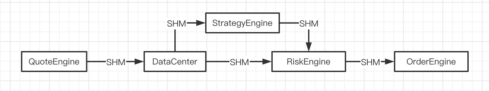
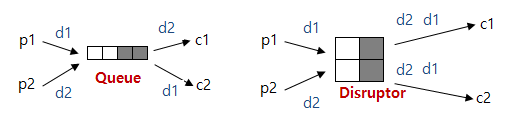
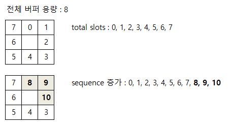

应用场景
如下图所示，MyOTP中将一个传统的单进程多线程交易系统切换为多进程的交易系统。进程间通信采用基于共享内存的queue、disruptor、key-store和req-rep等组件实现。 
Disruptor
Disruptor是英国外汇交易公司LMAX开发的一个线程间通信的框架，即在多线程间共享数据。它是由LMAX公司开发的可信消息传递架构的一部分，以便用非常快速的方法来在多组件之间传递数据。这里借鉴这个框架的实现方式通过共享内存实现跨进程通信使用。 如下图，Disruptor不是传统的生产者-消费者模式，Disruptor的是广播形式的，通过修改映射共享内存实现一个行情源广播多个策略进程的模式。

Ring Buffer
Disruptor的底层数据结构是一个RingBuffer，并且只维护一个用于指向下一个可用的位置的游标。 当需要写入时，Disruptor会分配一个空间，并将指针更新为该空间的最大下标处，这块空间就是申请写入的线程所独享的。当空间分配成功后，写线程可以慢慢写入。所以当有多线程同时写入时，需要同步的地方只是更新游标，而更新游标只是做加操作，利用原子变量的加操作就可以避免使用锁，从而提高效率。当需要读取时，Disruptor 会等待游标更新到想要读取的下标处，然后执行读操作，这个过程同样不需要加锁。
1 | typedef struct |
RingBuffer使用cursor和next管理写入线程位置，next表示生产者为数据存储保留的位置，cursor是生产者保存完数据的位置，也就是消费者可以读取的位置。对SPMC和SPSC的模式，可以取消原子操作进一步提高效率。
现实编程过程中，加锁通常会严重地影响性能。线程会因为竞争不到锁而被挂起，等锁被释放的时候，线程又会被恢复，这个过程中存在着很大的开销，并且通常会有较长时间的中断，因为当一个线程正在等待锁时，它不能做任何其他事情。如果一个线程在持有锁的情况下被延迟执行，例如发生了缺页错误、调度延迟或者其它类似情况，那么所有需要这个锁的线程都无法执行下去。如果被阻塞线程的优先级较高，而持有锁的线程优先级较低，就会发生优先级反转。
Disruptor论文中讲述了一个实验：
- 这个测试程序调用了一个函数，该函数会对一个64位的计数器循环自增5亿次。
- 机器环境：2.4G 6核
- 运算： 64位的计数器累加5亿次
|Method | Time (ms) | |— | —| |Single thread | 300| |Single thread with CAS | 5,700| |Single thread with lock | 10,000| |Single thread with volatile write | 4,700| |Two threads with CAS | 30,000| |Two threads with lock | 224,000|
CAS操作比单线程无锁慢了1个数量级；有锁且多线程并发的情况下，速度比单线程无锁慢3个数量级。可见无锁速度最快。
单线程情况下，不加锁的性能 > CAS操作的性能 > 加锁的性能。
在多线程情况下，为了保证线程安全，必须使用CAS或锁，这种情况下，CAS的性能超过锁的性能，前者大约是后者的8倍。
综上可知，加锁的性能是最差的。

RingBuffer中数据的位置使用next和cursor两个单调递增的变量来表示。例如假设一个总大小为8的环形缓冲区。随着数据的存储，我们将使用顺序递增的索引来标记其位置（0,1,2,3,4,5,6..
类似这样）。但是，如果指数超过7，则指数在Disruptor中并没有再次回到0，而是像8、9、10一样继续增加。
Producer
Disruptor的实现思路就是每一个数据都会有一个唯一自增的序号，用一个环形队列来存储数据，写入数据的时候先分配出可写的空间序号，然后再慢慢写数据，等到数据写完后再更新一下可读区域。这样因为每个线程独占一块空间写入数据，就不会有线程同步问题，唯一需要同步的地方是分配写入空间和更新可读区域。但是这两个操作都是非常简单的加操作，加锁太浪费，所以Disruptor直接使用原子变量加自旋等待来同步，获取极高的性能。
next写入线程下个月写入位置，cursor读取线程可以读取的位置。
1 | bool set_data(T *data) { |
Reader
读取的时候则是先声明想读取的序号。然后就一直等待直到写入数据后更新的可读序号赶上想读取的序号。等待可以是CPU自旋等待或者放弃CPU时间片或者睡眠或者使用条件变量唤醒。此时可读序号之前的数据都是可读的，而读操作也不需要加锁。又可以获得极高的性能。读取后更新一下已读取序号，这样写入着就可以继续重复利用这块空间了。
1 | // last_idx, cursor last value |
消费者和生产者一样，必须在对环形缓冲区索引的所有操作完成后保存它读取数据的点，以防止生产者通过引用消费者的位置来覆盖缓冲区。
1 | // consomer/reader 最新可读取的数据位置 |
当调用生产者的Claim或消费者的WaitFor方法时，它不会立即返回，而是等待直到满足适当的条件。比如生产者调用Claim，下一个next位置违反了消费者位置，就需要等待。在Disruptor中，此时如何等待的方法是在Strategy模式中实现的。生产者和消费者的等待策略类型如下。
- BusySpinStrategy：不放弃cpu死循环等待
- YieldingStrategy：死循环一定次数后调用yield放弃cpu时间片。
- SleepingStrategy：死循环一定次数后重复调用yield放弃cpu时间片。调用yield一定次数后重复调用sleep睡眠指定时间。
- BlockingStrategy：阻塞等待，内部使用了条件变量，需要写入的时候唤醒。
Improve
如果内存足够大，写入数据量不是无限多的情况下，可以使用一个huge-page替换ring-buffer。操作在“无限长的内存页面”的上面，不需要考虑写入覆盖的问题，就可以取消ring-buffer里面对读写速度的控制部分进一步提高效率，同时也可以将所有的流程数据异步保存在本地，也就是把“事故现场”完整保留。
如下代码，vector通过管理内存地址的方式实现多个mmap创建内存空间连续使用，这样就可以直接使用在多线程和多进程中而不必区分版本。
1 | // 创建第一个Page，书签Bookmark也在这个页面上面 |
ShmKV
- Shm IPC Lock-Free KV Store对于小容量的hashmap直接使用二分法和共享内存是最好的方式
- SHM-Container对大量数据交互的map采用fork形式共享内存映射更方便。
链接
- MMAP
- Linux 中 mmap() 函数的内存映射问题理解
- Linux I/O 原理和 Zero-copy 技术全面揭秘
- DMA与零拷贝技术
- 一次“内存泄漏”引发的血案
- 功夫交易系统架构篇之二 「易筋经初探」
- basic disruptor c++ implementation for IPC
- Disruptor 분석 및 c++ 로 구현해보기
- 高性能队列——Disruptor
- Disruptor-cpp
- 伪共享分析以及volatile与缓存行填充的应用
- Using black magic to make a fast circular buffer
- C++ mmap 多进程文件读写
- 详解mmap原理
- 为什么要有虚拟内存
- 深入理解高并发技术 dpdk 无锁队列